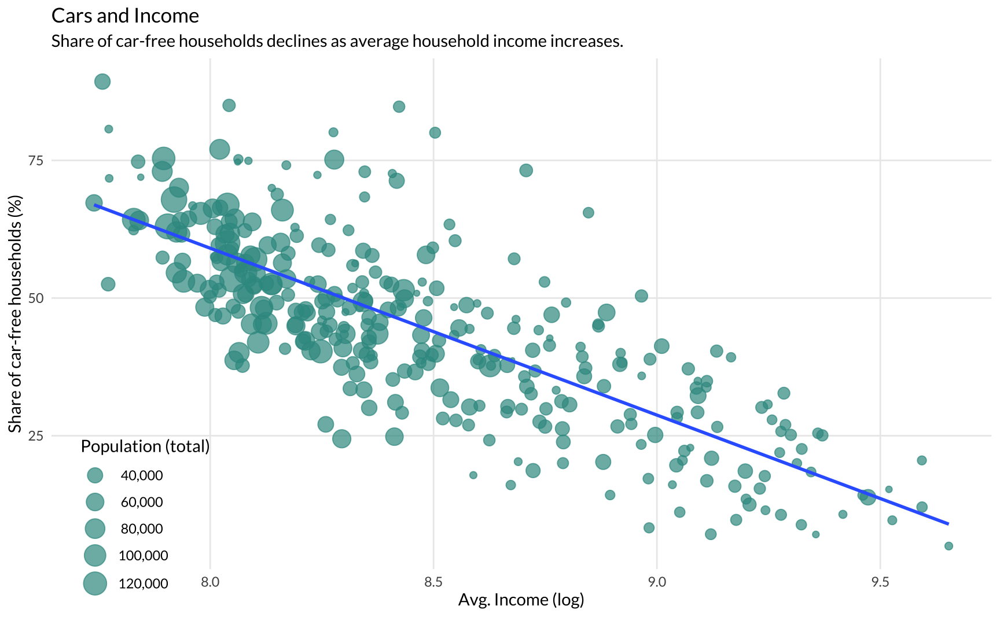
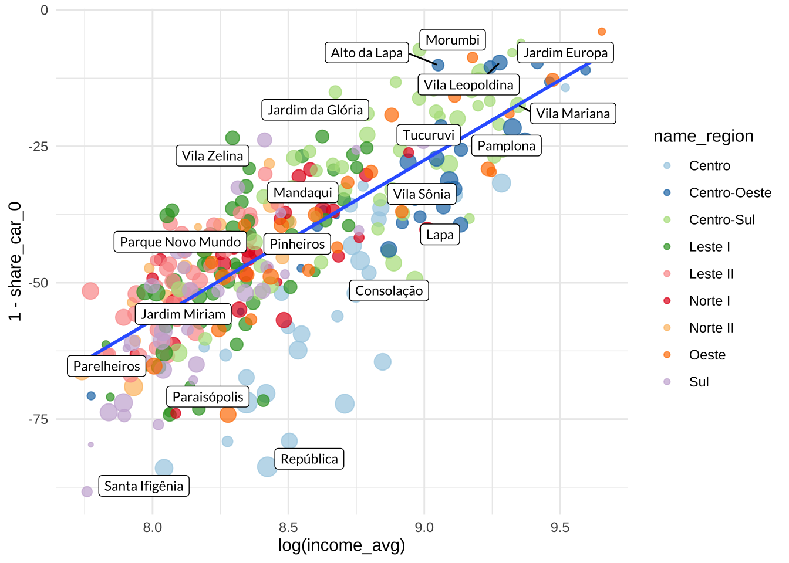

library(tidypod)
library(tidyverse)
library(sf)
library(showtext)
font_add_google("Lato", "Lato")
showtext_auto()
pod <- import_pod_tables(geo = TRUE)
travels <- import_pod_travel_tables(geo = TRUE)
x <- c(
"Vila Mariana", "Jardim Europa", "Vila Leopoldina", "Vila Sônia",
"Paraisópolis", "República", "Pinheiros", "Jardim Miriam", "Parelheiros",
"Tucuruvi", "Alto da Lapa", "Mandaqui", "Lapa", "Pamplona", "Parque Novo Mundo",
"Vila Zelina", "Consolação", "Jardim da Glória", "Santa Ifigênia", "Morumbi"
)spo <- filter(pod, code_muni == 36)
ggplot(spo) +
geom_sf(aes(fill = share_car_0), lwd = 0.05, color = "gray90") +
scale_fill_viridis_c(option = "inferno", direction = -1) +
ggthemes::theme_map() +
theme(
legend.position = c(0.75, 0.1)
)
ggplot(spo) +
geom_sf(aes(fill = share_car_0), lwd = 0.05, color = "gray90") +
scale_fill_viridis_c(option = "inferno", direction = -1) +
coord_sf(xlim = c(-46.75, -46.55), ylim = c(-23.64, -23.50))
sub <- filter(pod, income_avg > 0, !is.na(name_region))
ggplot(sub, aes(x = log(income_avg), y = car_rate)) +
geom_point(aes(size = pop_density, color = name_region), alpha = 0.7) +
geom_smooth(aes(weight = hh), method = "lm", se = FALSE) +
ggrepel::geom_label_repel(
data = filter(sub, name_zone %in% x),
aes(label = name_zone),
size = 3,
family = "Lato"
) +
scale_color_brewer(type = "qual", palette = 3) +
guides(size = "none") +
theme_minimal()
ggplot(sub, aes(x = log(income_avg), y = 1 - share_car_0)) +
geom_point(aes(size = pop_density, color = name_region), alpha = 0.7) +
geom_smooth(aes(weight = hh), method = "lm", se = FALSE) +
ggrepel::geom_label_repel(
data = filter(sub, name_zone %in% x),
aes(label = name_zone),
size = 3,
family = "Lato"
) +
scale_color_brewer(type = "qual", palette = 3) +
guides(size = "none") +
theme_minimal()
travel_mode <- travels$travel_mode$mode_grouped |>
pivot_wider(id_cols = "code_zone", names_from = "cat", values_from = "share") |>
janitor::clean_names()
tbl_travel <- sub |>
select(code_zone, name_zone, name_region, income_avg, pop_density, hh) |>
left_join(travel_mode, by = "code_zone") |>
st_drop_geometry() |>
as_tibble()p <- ggplot(tbl_travel, aes(x = log(income_avg), y = automovel)) +
geom_point(aes(size = pop_density, color = name_region, text = name_zone), alpha = 0.7) +
geom_smooth(aes(weight = hh), method = "lm", se = FALSE) +
scale_color_brewer(type = "qual", palette = 3) +
guides(size = "none") +
theme_minimal()
plotly::ggplotly(p)